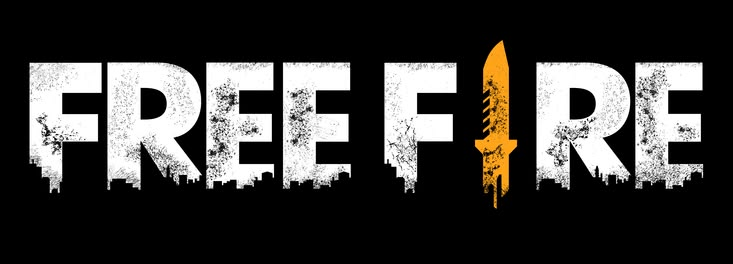
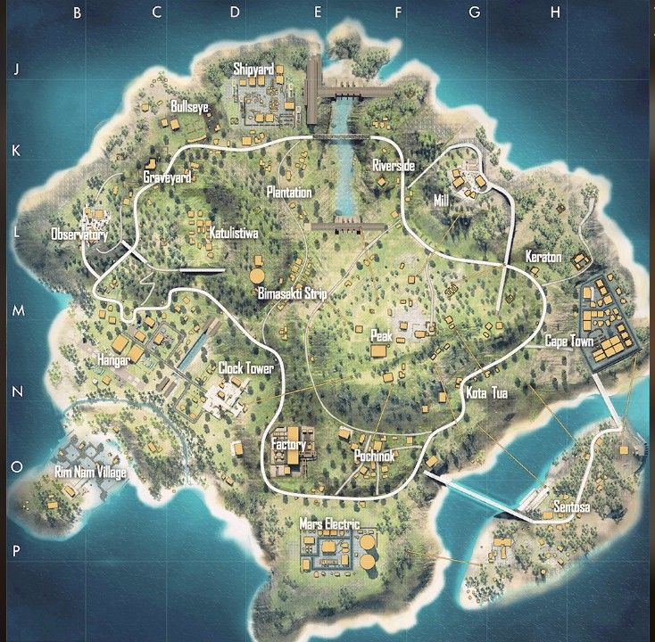
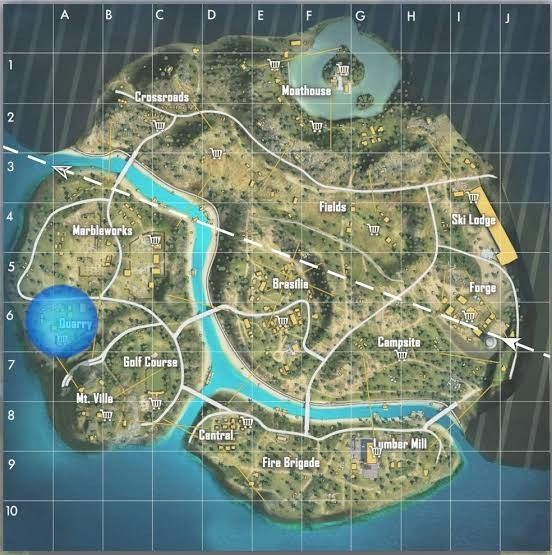
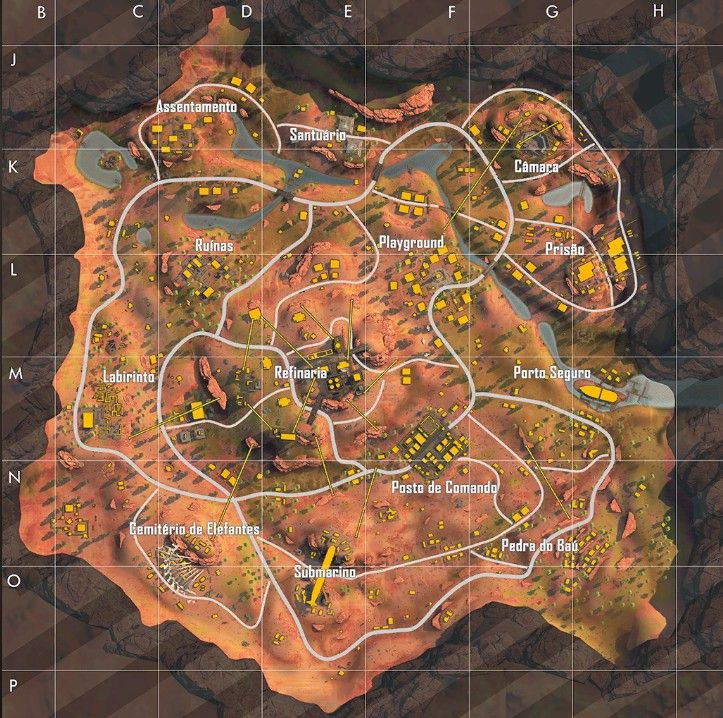

introdução ao free fire
Garena Free Fire é um jogo eletrônico de ação-aventura do gênero battle royale visto numa perspectiva em terceira pessoa.
Para começar a jogar, é necessário criar uma conta pessoal,
na qual você pode escolher se deseja criar uma conta própria do jogo ou se deseja conectar-se com alguma rede social,
como o Facebook. Após efetuar o login,
jogador deve configurar seu perfil e explorar o jogo afim de obter conhecimento sobre a jogabilidade
mapas
Bermuda

Bermuda é o mapa original de Free Fire, presente desde o lançamento oficial do jogo, em 30 de setembro de 2017.
Ambientado em uma ilha tropical, combina áreas urbanas,
zonas industriais, regiões costeiras e terrenos abertos.
Entre os locais nomeados estão Peak, Pochinok, Hangar,
Factory, Clock Tower e Ilha Sentosa.
Ao longo dos anos,
o mapa recebeu atualizações que modificaram aspectos estruturais e visuais de diferentes áreas.
Em 2020, foi lançada uma segunda versão, intitulada Bermuda Remasterizado, que ap
resentou alterações em relação ao cenário original.
A atualização manteve parte da estrutura inicial,
mas modificou áreas específicas.
A Ilha Sentosa foi substituída por uma nova área denominada Samurai’s Garden.
A versão também incluiu novos pontos de interesse, como Academy, Fisherman’s Creek, Hydrapower e Yagami Garden.
O mapa não é utilizado nas competições oficiais do jogo.
Purgatório

Introduzido em 2018, Purgatório foi o segundo mapa adicionado ao jogo. Apresenta maior variação topográfica em comparação com Bermuda, com elevações,
montanhas e um rio que divide o território. Entre seus locais nomeados estão Quarry, Moathouse, Crossroads e Brasília.
O mapa também inclui tirolesas que conectam regiões elevadas, ampliando as possibilidades de deslocamento.
Kalahari

Kalahari foi lançado em fevereiro de 2020. Inspirado no deserto africano homônimo, apresenta ambientação árida,
com formações rochosas, áreas abertas e estruturas abandonadas. Possui menor extensão territorial em
comparação com mapas anteriores e, em determinados modos, comporta vinte jogadores por partida. Entre os locais nomeados estão Refinaria,
Posto de Comando, Cemitério de Elefantes e Submarino. O mapa substituiu
temporariamente Purgatório nas partidas ranqueadas, decisão posteriormente revertida, passando a integrar o sistema de rotação de mapas